Longer Differences and Smoothing¶
One way to reduce $\sigma_k/\sigma_R$ is to reduce noise in new cases by taking a longer difference or smoothing case counts in some other way. How does this affect the estimation and interpretation of $R_t$?
As in the first section, we start with the approximate recursive relation If we instead look at a longer difference, where $\overline {T_{t,L} e^{\gamma(R_{t,L} - 1)}}$ is some intermediate value in between the minimum and maximum of the ${ \frac{\tau(t-i)}{\tau(t-i-1)} e^{\gamma (R_{t-i} - 1)} }_{i=0}^{L-1}$.
If testing is constant over time, we can then obtain an interpretable $\overline{R_{t,L}}$ by using $k_{t,L} =\log(C(t)-C(t-L))$ and following the procedure above.
If testing varies with time, it becomes hard to separate testing rate changes from $R_t$ after taking long differnces.
Note
The same analysis can be applied to other smoothing operations, i.e. using in place of $C(t) - C(t-L)$. However, there’s something strange about smoothing $C_t$, and then extracting a smoothed component of it using the Kalman filter. The inference afterwards is suspect; we would essentially be estimating a kernel regression of $C_t$ on time, and using the estimated regression as though it’s known with certainty.
When would long differences reduce variance? Well if $\Delta C(t) = \Delta C^\ast(t) + \epsilon_t$ with $\epsilon_t$ indepenedent over time with mean $0$ and constant variance, then you would need $C^\ast(t) - C^\ast(t-L)$ to increase faster than linearly with $L$. This is true if $C^\ast$ is growing exponentially.
Alternatively, if $\epsilon_t$ is not independent over time, but negatively correlated (as seems likely), then variance can decrease with $L$. For example, if $\Delta C(t) = C^\ast(t) - C^\ast(t-\delta)$ with $\delta$ a random, independent increment with mean $1$, then variance will tend to decrease with $L$ regardless of $C^\ast(t)$.
Results¶
20-element Array{Symbol,1}:
Symbol("Stay.at.home..shelter.in.place")
Symbol("Date.closed.K.12.schools")
Symbol("Closed.gyms")
Symbol("Closed.movie.theaters")
Symbol("Closed.day.cares")
Symbol("Date.banned.visitors.to.nursing.homes")
Symbol("Closed.non.essential.businesses")
Symbol("Closed.restaurants.except.take.out")
:retail_and_recreation_percent_change_from_baseline
:grocery_and_pharmacy_percent_change_from_baseline
:parks_percent_change_from_baseline
:transit_stations_percent_change_from_baseline
:workplaces_percent_change_from_baseline
:residential_percent_change_from_baseline
:percentchangebusinesses
:constant
:logpopdens
Symbol("Percent.Unemployed..2018.")
Symbol("Percent.living.under.the.federal.poverty.line..2018.")
Symbol("Percent.at.risk.for.serious.illness.due.to.COVID")
Here, we will allow the initial and time varying mean of $R_{s,t}$ to depend on covariates.
We present estimates of $R_t$ with
and
for a variety of values of $L_1$ and $L_2$
reestimate=false
rlo=-1 #1 - eps(Float64)
rhi=1.2 #1+ eps(Float64)
K = length(xvars)
priors = (γ = truncated(Normal(1/7,1/7), 1/28, 1/1),
σR0 = truncated(Normal(1, 3), 0, Inf),
α0 = MvNormal(zeros(length(x0vars)), sqrt(10)), #truncated(Normal(1, 3), 0, Inf),
σR = truncated(Normal(0.25,1),0,Inf),
σk = truncated(Normal(0.1, 5), 0, Inf),
ρ = Uniform(rlo, rhi),
α = MvNormal(zeros(K), sqrt(10))
)
states_to_plot = ["New York", "New Jersey","Massachusetts","California",
"Georgia","Illinois","Michigan",
"Ohio","Wisconsin","Washington"]
warmup = default_warmup_stages(local_optimization=nothing,
stepsize_search=nothing,
init_steps=100, middle_steps=100,
terminating_steps=2*100,
doubling_stages=3, M=Symmetric)
for L1 in [1, 3, 7]
for L2 in [1, 3, 7]
mdl = CovidRt.RtModel(sdf, Symbol("cases.nyt"), xvars, x0vars,
priors; L1=L1, L2=L2,
time0=r->(r[Symbol("cases.nyt")].>=5))
estfile = "rt$(L1)_$(L2).jld2"
if !isfile(estfile) || reestimate
post = CovidRt.mcmc(mdl; iterations=2000, warmup=warmup)
@save estfile post
end
@load estfile post
cc = CovidRt.MCMCChain(post, xvars, x0vars)
display(plot(cc))
display(describe(cc))
states = mdl.id
S = length(states_to_plot)
figs = fill(plot(), S)
for (i,st) in enumerate(states_to_plot)
s = findfirst(states.==st)
figr = CovidRt.plotpostr(mdl.t[s],mdl.dlogk[s],post, mdl.X[s], mdl.X0[s])
l = @layout [a{.1h}; grid(1,1)]
figs[i] = plot(plot(annotation=(0.5,0.5, st), framestyle = :none),
plot(figr, ylim=(-1,10)), layout=l)
display(figs[i])
end
end
end
2-element Array{MCMCChains.ChainDataFrame,1}
Summary Statistics parameters mean std naive_se mcse ess r_hat ──────────────────────────────────────────────────────── ─────── ────── ──────── ────── ───────── ────── γ 0.2380 0.0335 0.0007 0.0009 1129.6752 1.0018 σR0 8.3216 1.2958 0.0290 0.0353 1321.1309 1.0024 α0 0.0833 3.1274 0.0699 0.0621 2949.4086 1.0016 α0 -2.1783 1.4837 0.0332 0.0268 2424.3509 0.9995 α0 -3.4168 2.1833 0.0488 0.0288 2900.1595 0.9997 α0 0.6973 1.1092 0.0248 0.0190 2886.0790 0.9996 α0 0.1604 0.3893 0.0087 0.0080 2512.7064 0.9995 σR 3.7083 0.5154 0.0115 0.0148 1168.9305 1.0016 σk 0.0262 0.0191 0.0004 0.0003 2370.2808 1.0006 ρ -0.4753 0.0166 0.0004 0.0003 3394.0528 0.9999 α -0.2486 0.1587 0.0035 0.0036 3035.1398 0.9999 α -0.0826 0.2352 0.0053 0.0041 2538.3254 0.9996 α -0.2077 0.3087 0.0069 0.0068 2549.1234 1.0005 α 0.1242 0.3220 0.0072 0.0076 2769.9079 1.0014 α 0.0223 0.1388 0.0031 0.0022 2377.6996 0.9995 α -0.0253 0.1217 0.0027 0.0022 3141.0424 0.9998 α -0.1372 0.1741 0.0039 0.0038 2806.1790 1.0002 α 0.1156 0.2763 0.0062 0.0066 3022.4785 0.9998 α -0.8251 0.8919 0.0199 0.0165 2529.9534 0.9999 α 0.8645 0.6796 0.0152 0.0141 2654.1357 0.9995 α 0.2377 0.1908 0.0043 0.0034 3062.3848 1.0009 α -0.0101 0.7762 0.0174 0.0128 2871.7434 0.9998 α -1.7944 1.2392 0.0277 0.0293 2985.9465 0.9996 α 2.0360 2.1985 0.0492 0.0416 2987.4769 0.9995 α 3.5983 1.0044 0.0225 0.0215 2053.5214 1.0002 α -0.2029 0.7347 0.0164 0.0187 2928.7394 1.0001 α 0.0750 0.0441 0.0010 0.0007 2994.6683 0.9995 α 0.1244 0.0833 0.0019 0.0012 2810.2495 0.9997 α -0.0390 0.0365 0.0008 0.0004 3102.9205 0.9999 α 0.0417 0.0208 0.0005 0.0005 2802.1999 1.0002
Quantiles parameters 2.5% 25.0% 50.0% 75.0% 97.5% ──────────────────────────────────────────────────────── ─────── ─────── ─────── ─────── ─────── γ 0.1818 0.2143 0.2357 0.2581 0.3101 σR0 6.0313 7.4045 8.2472 9.1174 11.0258 α0 -5.9921 -2.0578 0.1200 2.3319 6.0594 α0 -5.2162 -3.1187 -2.1818 -1.1533 0.7435 α0 -7.6253 -4.8909 -3.4429 -1.9877 0.8950 α0 -1.4558 -0.0199 0.6879 1.4204 2.8503 α0 -0.5954 -0.0946 0.1564 0.4234 0.9250 σR 2.7895 3.3568 3.6668 4.0429 4.7843 σk 0.0009 0.0108 0.0225 0.0376 0.0722 ρ -0.5079 -0.4868 -0.4754 -0.4642 -0.4425 α -0.5607 -0.3514 -0.2426 -0.1406 0.0409 α -0.5436 -0.2333 -0.0781 0.0802 0.3813 α -0.7893 -0.4139 -0.2063 -0.0096 0.4040 α -0.5141 -0.0830 0.1144 0.3415 0.7833 α -0.2549 -0.0684 0.0255 0.1080 0.2895 α -0.2707 -0.1043 -0.0254 0.0546 0.2113 α -0.4859 -0.2464 -0.1369 -0.0233 0.2096 α -0.4134 -0.0719 0.1152 0.3035 0.6624 α -2.6157 -1.4143 -0.8175 -0.2298 0.8519 α -0.4825 0.4305 0.8579 1.3018 2.1930 α -0.1385 0.1060 0.2351 0.3658 0.6248 α -1.5224 -0.5316 -0.0456 0.5199 1.5640 α -4.2161 -2.6238 -1.7896 -0.9658 0.5846 α -2.1834 0.5922 1.9988 3.4727 6.3995 α 1.7135 2.9013 3.5655 4.2724 5.6507 α -1.7200 -0.6676 -0.1977 0.3056 1.1897 α -0.0098 0.0462 0.0738 0.1036 0.1650 α -0.0336 0.0683 0.1224 0.1795 0.2877 α -0.1133 -0.0630 -0.0372 -0.0150 0.0308 α 0.0024 0.0276 0.0408 0.0551 0.0831
2-element Array{MCMCChains.ChainDataFrame,1}
Summary Statistics parameters mean std naive_se mcse ess r_hat ──────────────────────────────────────────────────────── ─────── ────── ──────── ────── ───────── ────── γ 0.1147 0.0441 0.0010 0.0059 43.9564 1.0029 σR0 8.2415 2.3031 0.0515 0.2256 67.3522 1.0006 α0 0.2458 3.0978 0.0693 0.1194 727.1902 1.0013 α0 0.9793 1.9972 0.0447 0.0765 944.4931 0.9999 α0 2.3014 2.3913 0.0535 0.0930 1493.2793 1.0000 α0 -0.9686 1.7175 0.0384 0.0921 278.5971 0.9995 α0 0.5810 0.6403 0.0143 0.0467 146.7663 1.0006 σR 0.7583 0.6525 0.0146 0.0326 314.0958 0.9998 σk 0.7383 0.0200 0.0004 0.0012 245.1804 0.9998 ρ 0.5060 0.2180 0.0049 0.0300 38.1818 1.0018 α -2.4371 1.2990 0.0290 0.2125 42.2580 1.0223 α 0.2272 0.9207 0.0206 0.0780 82.0334 1.0175 α -1.0581 1.1288 0.0252 0.0727 189.0382 1.0048 α 0.3435 1.1867 0.0265 0.0756 330.6068 1.0009 α -0.1083 0.6771 0.0151 0.0735 61.4596 1.0003 α -0.3116 0.5848 0.0131 0.0715 52.0551 1.0009 α -1.0715 0.9228 0.0206 0.0965 76.1794 1.0017 α 0.3219 1.0602 0.0237 0.0986 86.7650 1.0191 α 0.3452 2.1170 0.0473 0.1002 613.7324 0.9996 α 1.3773 2.5724 0.0575 0.3323 65.7117 1.0164 α 0.1489 0.6982 0.0156 0.0477 209.6892 0.9996 α 2.4716 2.3331 0.0522 0.2445 64.2763 1.0026 α -4.2924 2.2301 0.0499 0.1207 366.7858 1.0011 α 4.0858 2.9442 0.0658 0.2521 104.2236 1.0125 α 6.1280 2.1766 0.0487 0.1335 250.6866 1.0030 α 0.2647 2.1043 0.0471 0.1509 241.6279 1.0015 α 0.5362 0.3180 0.0071 0.0443 38.4991 1.0003 α 0.7586 0.4915 0.0110 0.0548 59.8881 1.0155 α -0.2449 0.1766 0.0039 0.0165 90.8951 1.0006 α 0.0938 0.1001 0.0022 0.0113 55.3773 0.9996
Quantiles parameters 2.5% 25.0% 50.0% 75.0% 97.5% ──────────────────────────────────────────────────────── ─────── ─────── ─────── ─────── ─────── γ 0.0366 0.0915 0.1190 0.1411 0.2033 σR0 2.3841 6.9838 8.3429 9.6711 12.5180 α0 -5.5275 -1.8450 0.1066 2.3611 6.6506 α0 -2.6533 -0.3544 0.9044 2.1952 5.3544 α0 -2.4044 0.6902 2.4001 3.8356 6.9910 α0 -3.9537 -2.0922 -1.0938 0.0518 2.8717 α0 -0.7434 0.1802 0.5888 1.0158 1.7691 σR 0.0328 0.2622 0.5696 1.0852 2.4548 σk 0.6863 0.7301 0.7410 0.7505 0.7677 ρ 0.1750 0.3515 0.4613 0.5900 0.9275 α -6.6904 -2.8337 -2.1123 -1.5968 -0.8902 α -1.2878 -0.3601 0.1433 0.7053 2.4175 α -3.2941 -1.7416 -1.0751 -0.4060 1.2919 α -2.0165 -0.3411 0.3469 1.0659 2.6649 α -1.8473 -0.4186 -0.0543 0.3086 1.0401 α -1.7097 -0.5724 -0.2418 0.0580 0.6864 α -3.6637 -1.4101 -0.9288 -0.5281 0.2052 α -2.0500 -0.2544 0.3523 0.9569 2.3787 α -3.7326 -1.0542 0.3411 1.6938 4.5174 α -5.8257 0.1519 1.5338 2.9113 6.1041 α -1.2717 -0.2521 0.1339 0.5793 1.5184 α -2.7248 1.0750 2.6177 4.0025 6.6242 α -8.7376 -5.6933 -4.2907 -2.7752 -0.0176 α -1.1376 1.9883 4.1708 6.1516 9.9909 α 1.7644 4.7110 6.1001 7.6244 10.2935 α -3.7662 -1.0639 0.1535 1.4878 5.0153 α 0.1186 0.3288 0.4531 0.6369 1.3379 α 0.0668 0.4758 0.6882 0.9267 2.3756 α -0.5787 -0.3498 -0.2522 -0.1505 0.1383 α -0.1973 0.0563 0.1046 0.1529 0.2454
2-element Array{MCMCChains.ChainDataFrame,1}
Summary Statistics parameters mean std naive_se mcse ess r_hat ──────────────────────────────────────────────────────── ─────── ────── ──────── ────── ───────── ────── γ 0.1040 0.0197 0.0004 0.0005 1039.9962 1.0002 σR0 8.7675 1.5457 0.0346 0.0345 1463.1572 0.9996 α0 0.4002 3.1422 0.0703 0.0870 2070.9949 0.9998 α0 -0.3652 1.2024 0.0269 0.0285 1742.5764 0.9999 α0 1.2215 1.9073 0.0426 0.0439 1754.9184 1.0010 α0 -0.6728 0.8936 0.0200 0.0230 1768.7963 0.9995 α0 0.7509 0.3522 0.0079 0.0071 2012.4673 0.9998 σR 2.3328 0.4243 0.0095 0.0088 1223.7476 1.0002 σk 0.7130 0.0128 0.0003 0.0003 2214.0691 0.9995 ρ 0.9172 0.0100 0.0002 0.0003 2356.3200 0.9995 α -3.5068 1.2113 0.0271 0.0291 1496.9197 1.0001 α 2.9472 1.3743 0.0307 0.0265 1950.2301 0.9995 α -0.5351 1.7471 0.0391 0.0351 2618.8754 0.9998 α -0.8207 1.8173 0.0406 0.0391 2318.4136 0.9995 α -0.2803 1.1657 0.0261 0.0297 1654.1324 1.0006 α -1.4854 1.0468 0.0234 0.0228 2131.8463 0.9996 α -2.1836 1.2324 0.0276 0.0341 1291.5573 1.0014 α 1.1898 1.5060 0.0337 0.0325 2444.8906 0.9998 α -1.3686 2.7051 0.0605 0.0689 2180.9287 0.9997 α -1.0620 2.3811 0.0532 0.0553 1836.1272 0.9995 α 0.5325 0.8995 0.0201 0.0173 2053.9835 0.9995 α 0.4921 2.5814 0.0577 0.0488 2134.2997 1.0003 α -0.8015 2.3892 0.0534 0.0459 2136.1054 0.9997 α 1.7592 3.0476 0.0681 0.0543 1636.8509 0.9995 α 1.8546 2.4747 0.0553 0.0453 2701.0444 1.0004 α 1.0580 2.8311 0.0633 0.0607 2066.1640 1.0012 α 1.3918 0.5591 0.0125 0.0119 1515.7568 1.0001 α 0.1335 0.9013 0.0202 0.0223 1997.7878 0.9996 α -0.0657 0.3847 0.0086 0.0064 2091.4874 0.9996 α -0.0798 0.1564 0.0035 0.0031 2295.6770 0.9997
Quantiles parameters 2.5% 25.0% 50.0% 75.0% 97.5% ──────────────────────────────────────────────────────── ─────── ─────── ─────── ─────── ─────── γ 0.0728 0.0900 0.1015 0.1147 0.1516 σR0 5.9639 7.7026 8.6593 9.7697 11.8600 α0 -5.7688 -1.7226 0.4167 2.5647 6.4989 α0 -2.7376 -1.1473 -0.3840 0.4292 1.9793 α0 -2.3990 -0.1118 1.1779 2.5177 4.9482 α0 -2.4393 -1.2593 -0.6818 -0.0941 1.0963 α0 0.0927 0.5201 0.7343 0.9665 1.4878 σR 1.5560 2.0377 2.3242 2.6116 3.2019 σk 0.6880 0.7044 0.7128 0.7215 0.7384 ρ 0.8964 0.9104 0.9174 0.9241 0.9360 α -5.9584 -4.2893 -3.4390 -2.6705 -1.2530 α 0.3716 2.0497 2.8752 3.8280 5.8286 α -3.9565 -1.7019 -0.5187 0.6726 2.8566 α -4.4400 -2.0346 -0.8075 0.4513 2.5932 α -2.5247 -1.0515 -0.2665 0.5043 2.0367 α -3.5309 -2.1886 -1.4872 -0.7515 0.5058 α -4.7360 -2.9510 -2.1066 -1.3422 0.0364 α -1.7533 0.1710 1.1937 2.2030 4.1309 α -6.6758 -3.2319 -1.3054 0.4728 3.7943 α -5.7641 -2.7024 -1.0410 0.5200 3.6409 α -1.1844 -0.0583 0.5139 1.1238 2.3663 α -4.6320 -1.2719 0.4875 2.2390 5.4857 α -5.3332 -2.4364 -0.8549 0.7749 3.8768 α -4.3549 -0.1702 1.7859 3.7589 7.7743 α -2.9976 0.1600 1.8883 3.5467 6.5515 α -4.4285 -0.8148 1.0377 2.9909 6.5533 α 0.3753 1.0148 1.3500 1.7299 2.6064 α -1.6897 -0.4629 0.1338 0.7463 1.8992 α -0.8401 -0.3140 -0.0540 0.1839 0.6824 α -0.3965 -0.1770 -0.0822 0.0231 0.2295
2-element Array{MCMCChains.ChainDataFrame,1}
Summary Statistics parameters mean std naive_se mcse ess r_hat ──────────────────────────────────────────────────────── ─────── ────── ──────── ────── ───────── ────── γ 0.0869 0.0176 0.0004 0.0008 436.7414 1.0005 σR0 11.2095 1.9197 0.0429 0.0762 561.7009 1.0008 α0 0.1604 3.1807 0.0711 0.0827 1426.4505 1.0047 α0 0.6505 3.0588 0.0684 0.0759 1955.3678 0.9995 α0 0.5340 3.0692 0.0686 0.0697 1650.8656 1.0026 α0 0.8503 2.9209 0.0653 0.0540 1435.1789 0.9996 α0 2.5210 1.6551 0.0370 0.0363 1214.9236 1.0012 σR 0.8074 0.5702 0.0128 0.0238 519.8492 1.0025 σk 0.2296 0.0133 0.0003 0.0008 242.9843 1.0087 ρ 0.0669 0.0279 0.0006 0.0005 1259.4011 0.9998 α -0.9154 0.3212 0.0072 0.0112 1072.4444 0.9996 α 0.2387 0.3821 0.0085 0.0069 2325.0140 0.9997 α -0.3732 0.4831 0.0108 0.0075 2101.3144 0.9996 α -0.0107 0.4972 0.0111 0.0080 1927.3228 0.9995 α -0.0175 0.2355 0.0053 0.0065 1357.2607 0.9997 α -0.1023 0.1974 0.0044 0.0044 2298.0642 0.9995 α -0.4727 0.2881 0.0064 0.0072 1478.9524 1.0007 α 0.0633 0.4194 0.0094 0.0082 1973.1984 0.9995 α -0.2793 1.2997 0.0291 0.0314 1965.2527 1.0005 α 1.7859 1.0858 0.0243 0.0278 1805.6352 1.0001 α -0.0168 0.2729 0.0061 0.0062 2160.1974 1.0004 α 1.9159 1.1523 0.0258 0.0348 1691.0836 0.9996 α -1.1065 1.6243 0.0363 0.0469 1391.5699 0.9999 α 6.0724 2.5718 0.0575 0.0650 1793.4194 0.9995 α 2.6726 1.3354 0.0299 0.0378 1198.5228 0.9996 α 0.0055 1.0993 0.0246 0.0303 1434.5533 1.0021 α 0.2178 0.0815 0.0018 0.0022 1423.3789 0.9996 α 0.3648 0.1488 0.0033 0.0047 1331.0367 1.0020 α -0.1562 0.0648 0.0014 0.0019 1342.5831 1.0004 α 0.0701 0.0335 0.0007 0.0010 1240.6568 1.0013
Quantiles parameters 2.5% 25.0% 50.0% 75.0% 97.5% ──────────────────────────────────────────────────────── ─────── ─────── ─────── ─────── ─────── γ 0.0585 0.0743 0.0847 0.0971 0.1280 σR0 7.7554 9.8250 11.1482 12.4911 15.1838 α0 -6.2953 -1.9750 0.1522 2.3037 6.1198 α0 -5.2984 -1.4701 0.6468 2.6953 6.8256 α0 -5.4957 -1.5122 0.5917 2.5970 6.3213 α0 -4.7749 -1.1290 0.8091 2.8976 6.5522 α0 -0.3149 1.3709 2.4147 3.4891 6.1513 σR 0.0395 0.3466 0.7013 1.1526 2.1734 σk 0.1958 0.2269 0.2332 0.2371 0.2425 ρ 0.0231 0.0461 0.0638 0.0846 0.1275 α -1.6585 -1.1131 -0.8693 -0.6852 -0.3960 α -0.5000 -0.0105 0.2283 0.4672 1.0429 α -1.3878 -0.6710 -0.3533 -0.0651 0.5848 α -0.9423 -0.3326 -0.0111 0.2979 0.9715 α -0.4693 -0.1716 -0.0223 0.1387 0.4620 α -0.5107 -0.2317 -0.0923 0.0347 0.2714 α -1.1013 -0.6441 -0.4512 -0.2709 0.0107 α -0.7429 -0.2015 0.0579 0.3400 0.9210 α -2.8843 -1.1174 -0.2737 0.5622 2.3377 α -0.2340 1.0572 1.7365 2.4649 4.0269 α -0.5774 -0.1863 -0.0108 0.1610 0.4945 α -0.1944 1.1548 1.9058 2.5988 4.3278 α -4.6423 -2.1765 -1.0731 0.0059 1.9217 α 1.0052 4.2954 6.1045 7.8424 11.1270 α 0.1869 1.7454 2.5917 3.5018 5.5087 α -2.1319 -0.6826 0.0240 0.7115 2.1530 α 0.0712 0.1607 0.2116 0.2699 0.3887 α 0.1134 0.2611 0.3521 0.4539 0.6909 α -0.2972 -0.1986 -0.1488 -0.1091 -0.0489 α 0.0090 0.0469 0.0681 0.0913 0.1401
2-element Array{MCMCChains.ChainDataFrame,1}
Summary Statistics parameters mean std naive_se mcse ess r_hat ──────────────────────────────────────────────────────── ─────── ────── ──────── ────── ───────── ────── γ 0.1630 0.0254 0.0006 0.0006 975.9611 0.9998 σR0 9.2284 1.4406 0.0322 0.0238 1329.8969 0.9996 α0 0.6662 3.2975 0.0737 0.0606 2929.7738 0.9997 α0 -0.8181 1.4558 0.0326 0.0308 2823.4616 0.9998 α0 1.9382 2.0475 0.0458 0.0458 2603.2987 0.9997 α0 -1.0257 1.0794 0.0241 0.0247 2485.0499 0.9996 α0 0.4024 0.3886 0.0087 0.0078 2525.1377 0.9996 σR 3.2484 0.4882 0.0109 0.0104 1044.6232 0.9996 σk 0.0176 0.0134 0.0003 0.0004 2346.5888 0.9995 ρ 0.5572 0.0159 0.0004 0.0002 2327.8345 0.9997 α -1.4673 0.4477 0.0100 0.0084 2189.6658 0.9996 α -0.2469 0.4783 0.0107 0.0065 2660.4964 1.0002 α -0.7380 0.7037 0.0157 0.0105 2639.7197 0.9995 α -0.1196 0.7345 0.0164 0.0108 2543.3400 0.9998 α -0.2585 0.3806 0.0085 0.0069 3329.8037 0.9996 α -0.2728 0.3198 0.0072 0.0065 2397.1893 1.0003 α -0.3542 0.3965 0.0089 0.0077 2353.2106 0.9995 α 0.2533 0.5470 0.0122 0.0101 2785.4361 1.0008 α -0.2969 1.6075 0.0359 0.0331 2746.7921 1.0001 α 1.6862 1.2844 0.0287 0.0365 2700.8355 1.0009 α -0.1781 0.3026 0.0068 0.0070 2552.5129 0.9995 α 2.4641 1.4616 0.0327 0.0293 2560.7966 1.0006 α 1.2500 1.5160 0.0339 0.0296 2810.6517 0.9995 α 4.0229 2.4883 0.0556 0.0498 3258.4620 0.9996 α -0.1160 1.1606 0.0260 0.0235 3050.1567 0.9995 α 1.4969 1.6146 0.0361 0.0292 2463.2534 0.9995 α 0.3292 0.1381 0.0031 0.0023 2708.7133 0.9995 α 0.3865 0.2413 0.0054 0.0039 2953.5938 0.9996 α -0.1883 0.1011 0.0023 0.0015 2886.5193 0.9995 α 0.0751 0.0501 0.0011 0.0008 2557.9342 0.9997
Quantiles parameters 2.5% 25.0% 50.0% 75.0% 97.5% ──────────────────────────────────────────────────────── ─────── ─────── ─────── ─────── ─────── γ 0.1225 0.1448 0.1604 0.1775 0.2227 σR0 6.5504 8.2293 9.2017 10.1137 12.1738 α0 -5.7448 -1.5585 0.6638 2.9035 7.2377 α0 -3.6174 -1.8531 -0.8085 0.2173 2.0026 α0 -1.9904 0.5653 1.9530 3.3381 5.8993 α0 -3.1931 -1.7342 -1.0420 -0.3093 1.1111 α0 -0.3594 0.1520 0.3938 0.6710 1.2097 σR 2.3363 2.9124 3.2242 3.5735 4.2390 σk 0.0008 0.0068 0.0146 0.0248 0.0500 ρ 0.5253 0.5465 0.5573 0.5679 0.5878 α -2.3765 -1.7816 -1.4408 -1.1448 -0.6843 α -1.1822 -0.5691 -0.2281 0.0672 0.6528 α -2.1367 -1.1915 -0.7397 -0.2696 0.6461 α -1.5904 -0.6246 -0.1163 0.3829 1.2953 α -1.0058 -0.5145 -0.2479 0.0007 0.4934 α -0.9611 -0.4729 -0.2565 -0.0551 0.3290 α -1.1777 -0.5915 -0.3357 -0.0883 0.3818 α -0.8000 -0.1128 0.2386 0.6174 1.3630 α -3.3996 -1.3781 -0.2959 0.7624 2.8044 α -0.7860 0.8360 1.6737 2.5140 4.1824 α -0.8109 -0.3692 -0.1711 0.0251 0.4051 α -0.2389 1.4380 2.4599 3.4713 5.3938 α -1.7058 0.1950 1.2723 2.3098 4.2566 α -0.8742 2.3080 4.0745 5.7166 8.7999 α -2.3964 -0.8955 -0.0914 0.6674 2.1937 α -1.7193 0.4374 1.4953 2.5836 4.6065 α 0.0734 0.2366 0.3203 0.4136 0.6258 α -0.0826 0.2233 0.3825 0.5441 0.8656 α -0.3962 -0.2516 -0.1874 -0.1205 -0.0008 α -0.0203 0.0411 0.0736 0.1082 0.1775
2-element Array{MCMCChains.ChainDataFrame,1}
Summary Statistics parameters mean std naive_se mcse ess r_hat ──────────────────────────────────────────────────────── ─────── ────── ──────── ────── ───────── ────── γ 0.1673 0.0275 0.0006 0.0011 782.7853 1.0009 σR0 8.2286 1.4028 0.0314 0.0541 795.1382 1.0016 α0 1.2332 3.0566 0.0683 0.0557 3174.1577 1.0000 α0 -1.2195 1.0141 0.0227 0.0273 1871.6746 0.9996 α0 1.5032 1.6523 0.0369 0.0311 2110.0327 0.9998 α0 -0.2517 0.7318 0.0164 0.0126 2295.2985 0.9996 α0 0.3307 0.2601 0.0058 0.0062 2132.5259 0.9996 σR 3.0617 0.4903 0.0110 0.0205 784.8649 1.0016 σk 0.0403 0.0251 0.0006 0.0005 1683.0998 0.9998 ρ 0.8315 0.0126 0.0003 0.0004 2061.0767 1.0012 α -1.3384 0.6040 0.0135 0.0141 1994.5150 1.0009 α 0.7355 0.5736 0.0128 0.0081 2843.1389 0.9995 α -1.4712 0.9633 0.0215 0.0234 2543.6082 0.9995 α 0.3456 0.9929 0.0222 0.0231 2539.3557 0.9998 α -0.2258 0.6438 0.0144 0.0177 2206.5064 1.0021 α -0.4708 0.5805 0.0130 0.0125 2143.9507 0.9995 α -0.0801 0.6076 0.0136 0.0106 3040.4135 1.0000 α 1.1049 0.7019 0.0157 0.0167 2691.6658 0.9997 α 6.2118 1.8229 0.0408 0.0347 2324.6279 0.9996 α -1.2221 1.5101 0.0338 0.0232 2919.1872 0.9996 α -0.6433 0.3255 0.0073 0.0054 2664.5121 0.9997 α 0.2458 1.7571 0.0393 0.0313 2439.3191 1.0000 α 1.2531 1.5979 0.0357 0.0291 2440.8623 1.0000 α -0.1925 2.4222 0.0542 0.0537 3032.4581 1.0001 α 0.1653 1.0918 0.0244 0.0314 2402.4148 0.9999 α 3.2292 2.5367 0.0567 0.0335 3500.7614 0.9997 α 0.9473 0.3334 0.0075 0.0057 2215.8859 0.9995 α -0.1648 0.5339 0.0119 0.0135 2279.0465 1.0027 α -0.1120 0.2388 0.0053 0.0049 2247.5050 1.0017 α 0.0546 0.0998 0.0022 0.0012 2624.9494 0.9995
Quantiles parameters 2.5% 25.0% 50.0% 75.0% 97.5% ──────────────────────────────────────────────────────── ─────── ─────── ─────── ─────── ─────── γ 0.1235 0.1472 0.1643 0.1839 0.2295 σR0 5.6993 7.2553 8.1262 9.1553 11.2483 α0 -4.4475 -0.9161 1.2538 3.2725 7.1722 α0 -3.2249 -1.9012 -1.2147 -0.5211 0.7230 α0 -1.7584 0.4030 1.4756 2.5975 4.7921 α0 -1.7413 -0.7418 -0.2377 0.2228 1.2257 α0 -0.1469 0.1519 0.3182 0.4906 0.8678 σR 2.1760 2.7179 3.0367 3.3879 4.0060 σk 0.0021 0.0195 0.0380 0.0595 0.0902 ρ 0.8072 0.8230 0.8318 0.8399 0.8562 α -2.5819 -1.7301 -1.3122 -0.9162 -0.1886 α -0.4016 0.3688 0.7208 1.1056 1.9399 α -3.4653 -2.0834 -1.4577 -0.8131 0.3839 α -1.5936 -0.3323 0.3429 1.0176 2.3091 α -1.5219 -0.6595 -0.2052 0.2103 0.9800 α -1.6155 -0.8461 -0.4789 -0.0873 0.6505 α -1.2774 -0.4816 -0.0713 0.3172 1.0670 α -0.2027 0.6103 1.0746 1.5716 2.4934 α 2.7311 4.9588 6.1812 7.3582 9.9230 α -4.0184 -2.2543 -1.2369 -0.2178 1.8317 α -1.3275 -0.8546 -0.6330 -0.4174 -0.0281 α -3.2973 -0.9314 0.2486 1.3949 3.6787 α -1.7720 0.1653 1.2185 2.3436 4.4236 α -4.8703 -1.8448 -0.1905 1.4296 4.5480 α -2.0341 -0.5583 0.1656 0.8560 2.2745 α -1.9096 1.5132 3.2402 4.9368 8.1207 α 0.3443 0.7172 0.9347 1.1582 1.6298 α -1.1924 -0.5241 -0.1698 0.1767 0.9057 α -0.6085 -0.2608 -0.1049 0.0448 0.3426 α -0.1398 -0.0102 0.0541 0.1173 0.2550
2-element Array{MCMCChains.ChainDataFrame,1}
Summary Statistics parameters mean std naive_se mcse ess r_hat ──────────────────────────────────────────────────────── ─────── ────── ──────── ────── ───────── ────── γ 0.0728 0.0167 0.0004 0.0008 413.7090 1.0045 σR0 8.2456 1.7239 0.0385 0.0688 571.5074 1.0021 α0 0.0816 3.1567 0.0706 0.0533 2838.1829 0.9997 α0 0.3689 3.1064 0.0695 0.0690 2471.8012 1.0027 α0 0.2978 3.1004 0.0693 0.0618 2330.3827 0.9995 α0 -0.1587 2.5616 0.0573 0.0641 2300.0297 0.9999 α0 1.0014 1.1095 0.0248 0.0263 2153.5984 0.9997 σR 2.3692 0.5295 0.0118 0.0176 729.9218 1.0059 σk 0.0698 0.0330 0.0007 0.0014 648.8239 1.0020 ρ 0.0933 0.0332 0.0007 0.0012 895.9526 0.9997 α -1.1717 0.3478 0.0078 0.0114 740.4711 1.0018 α 0.0019 0.2900 0.0065 0.0067 2216.3888 1.0003 α -0.3402 0.3801 0.0085 0.0102 2164.8538 0.9995 α 0.0138 0.3943 0.0088 0.0085 2056.8513 1.0000 α -0.1916 0.1758 0.0039 0.0042 1561.0696 0.9996 α -0.1387 0.1556 0.0035 0.0024 2033.1127 0.9995 α -0.6001 0.2430 0.0054 0.0082 852.2714 1.0010 α 0.1192 0.3359 0.0075 0.0071 2588.9218 0.9995 α -0.3819 1.0706 0.0239 0.0208 1973.4647 0.9995 α 0.2846 0.8234 0.0184 0.0158 2390.4307 0.9996 α 0.0582 0.2138 0.0048 0.0050 2197.5840 1.0000 α 2.4898 1.0030 0.0224 0.0249 1465.0748 0.9996 α 1.4870 1.4009 0.0313 0.0309 1751.4136 0.9997 α 8.6409 2.3297 0.0521 0.0481 2584.1795 1.0000 α 1.1987 1.0679 0.0239 0.0221 1759.2664 1.0006 α 0.3338 0.8961 0.0200 0.0169 2341.9979 1.0010 α 0.2813 0.0875 0.0020 0.0028 738.1542 1.0007 α 0.3957 0.1342 0.0030 0.0039 1114.8248 1.0005 α -0.1553 0.0583 0.0013 0.0017 1049.1967 1.0002 α 0.0706 0.0300 0.0007 0.0009 1249.9860 1.0024
Quantiles parameters 2.5% 25.0% 50.0% 75.0% 97.5% ──────────────────────────────────────────────────────── ─────── ─────── ─────── ─────── ─────── γ 0.0472 0.0608 0.0703 0.0823 0.1111 σR0 5.2065 6.9938 8.1437 9.3702 11.8567 α0 -5.8344 -2.1381 0.0050 2.2330 6.2304 α0 -5.7440 -1.7133 0.3554 2.4817 6.4752 α0 -5.7532 -1.8255 0.2101 2.4340 6.0826 α0 -5.3331 -1.8435 -0.0771 1.5796 4.8555 α0 -1.0002 0.2297 0.9466 1.6944 3.3428 σR 1.4187 1.9877 2.3520 2.7103 3.5138 σk 0.0052 0.0445 0.0748 0.0954 0.1224 ρ 0.0362 0.0702 0.0895 0.1124 0.1708 α -1.9576 -1.3687 -1.1226 -0.9291 -0.6090 α -0.5788 -0.1863 0.0049 0.1910 0.5691 α -1.1253 -0.5829 -0.3204 -0.0895 0.3773 α -0.7789 -0.2494 0.0097 0.2695 0.8061 α -0.5602 -0.2977 -0.1807 -0.0718 0.1315 α -0.4701 -0.2321 -0.1304 -0.0412 0.1593 α -1.1188 -0.7586 -0.5724 -0.4233 -0.1797 α -0.5592 -0.0996 0.1146 0.3420 0.7825 α -2.5467 -1.0930 -0.3718 0.3365 1.6842 α -1.3284 -0.2523 0.2722 0.8145 1.9236 α -0.3670 -0.0798 0.0616 0.1949 0.4739 α 0.7822 1.7892 2.4123 3.1282 4.6075 α -1.4375 0.5968 1.5717 2.4326 4.0186 α 3.9507 7.1106 8.6489 10.1803 13.1893 α -0.7304 0.4643 1.1401 1.8625 3.5145 α -1.5436 -0.2390 0.3570 0.9184 2.0646 α 0.1398 0.2176 0.2726 0.3327 0.4823 α 0.1671 0.3029 0.3820 0.4795 0.6909 α -0.2832 -0.1940 -0.1510 -0.1131 -0.0581 α 0.0190 0.0487 0.0681 0.0891 0.1358
2-element Array{MCMCChains.ChainDataFrame,1}
Summary Statistics parameters mean std naive_se mcse ess r_hat ──────────────────────────────────────────────────────── ─────── ────── ──────── ────── ───────── ────── γ 0.0881 0.0140 0.0003 0.0004 907.2247 0.9995 σR0 8.6008 1.3915 0.0311 0.0358 1083.7379 0.9995 α0 0.2177 3.0730 0.0687 0.0833 1840.2836 0.9996 α0 -0.2439 1.1062 0.0247 0.0246 1794.4922 1.0004 α0 -0.3634 1.7305 0.0387 0.0415 1865.8969 0.9996 α0 -0.3484 0.8261 0.0185 0.0180 1999.7307 0.9997 α0 0.4100 0.2893 0.0065 0.0083 2086.9626 0.9995 σR 3.1885 0.4980 0.0111 0.0138 911.5169 0.9995 σk 0.0123 0.0090 0.0002 0.0002 1438.5724 0.9999 ρ 0.7375 0.0139 0.0003 0.0004 2828.6993 1.0035 α -1.7916 0.5716 0.0128 0.0096 1621.5692 0.9995 α -0.0229 0.5635 0.0126 0.0138 2213.5367 0.9995 α -0.9113 0.8762 0.0196 0.0132 2174.5114 1.0001 α -0.0547 0.9293 0.0208 0.0121 2061.4574 0.9996 α -0.4520 0.5620 0.0126 0.0133 1477.9412 0.9997 α -0.5728 0.4788 0.0107 0.0128 1662.0118 1.0011 α -0.3821 0.5218 0.0117 0.0115 2048.9604 0.9996 α 0.6714 0.7145 0.0160 0.0134 2062.9214 0.9995 α 0.5851 1.7771 0.0397 0.0395 1693.8130 0.9999 α -1.7855 1.4377 0.0321 0.0395 1947.3380 1.0021 α -0.1006 0.3231 0.0072 0.0065 2032.9266 1.0001 α 3.9189 1.7430 0.0390 0.0417 2061.2452 0.9998 α 1.9543 1.6102 0.0360 0.0430 1794.3089 1.0005 α 2.8459 2.4966 0.0558 0.0606 2017.2567 1.0000 α 0.3638 1.1310 0.0253 0.0256 2222.6404 0.9995 α 2.5178 2.2030 0.0493 0.0455 1834.6427 1.0007 α 0.7361 0.2411 0.0054 0.0050 2000.8990 0.9999 α 0.4092 0.4017 0.0090 0.0084 2028.6212 0.9996 α -0.2069 0.1665 0.0037 0.0035 1958.9295 0.9996 α 0.0677 0.0729 0.0016 0.0017 1825.4365 0.9999
Quantiles parameters 2.5% 25.0% 50.0% 75.0% 97.5% ──────────────────────────────────────────────────────── ─────── ─────── ─────── ─────── ─────── γ 0.0642 0.0779 0.0868 0.0966 0.1196 σR0 6.0277 7.6464 8.4891 9.5187 11.4083 α0 -5.7744 -1.8283 0.2608 2.3619 6.0209 α0 -2.3709 -0.9983 -0.2664 0.5093 2.0139 α0 -3.7940 -1.5413 -0.3972 0.8448 2.8652 α0 -1.9546 -0.8949 -0.3447 0.1697 1.3315 α0 -0.1496 0.2115 0.3992 0.6002 0.9955 σR 2.2832 2.8419 3.1495 3.5128 4.2688 σk 0.0004 0.0050 0.0106 0.0180 0.0333 ρ 0.7104 0.7279 0.7373 0.7467 0.7649 α -2.9995 -2.1596 -1.7536 -1.3969 -0.7613 α -1.1610 -0.3851 -0.0234 0.3596 1.0343 α -2.6158 -1.5077 -0.9020 -0.3001 0.7625 α -1.9282 -0.6313 -0.0647 0.5669 1.7762 α -1.6088 -0.7989 -0.4511 -0.0914 0.6362 α -1.5542 -0.8734 -0.5537 -0.2486 0.2976 α -1.4339 -0.7209 -0.3811 -0.0303 0.6876 α -0.6917 0.1906 0.6687 1.1306 2.1126 α -2.8695 -0.5907 0.5609 1.8037 4.0203 α -4.5888 -2.7632 -1.7860 -0.8077 0.9614 α -0.7699 -0.3149 -0.0967 0.1192 0.5187 α 0.5354 2.7469 3.9118 5.0957 7.3128 α -1.3538 0.8722 1.9546 3.0727 4.9542 α -2.1506 1.2028 2.8238 4.5105 7.7673 α -1.8662 -0.3909 0.3733 1.1109 2.5723 α -1.7043 1.0472 2.4827 3.9671 6.8641 α 0.3056 0.5692 0.7169 0.8889 1.2443 α -0.3511 0.1426 0.4020 0.6617 1.2193 α -0.5365 -0.3116 -0.2053 -0.0934 0.1176 α -0.0734 0.0181 0.0673 0.1163 0.2158
2-element Array{MCMCChains.ChainDataFrame,1}
Summary Statistics parameters mean std naive_se mcse ess r_hat ──────────────────────────────────────────────────────── ─────── ────── ──────── ────── ───────── ────── γ 0.1270 0.0233 0.0005 0.0007 733.7008 0.9995 σR0 7.8500 1.4571 0.0326 0.0386 987.1342 0.9995 α0 0.7361 2.9721 0.0665 0.0491 2799.0859 0.9995 α0 0.0078 0.9800 0.0219 0.0229 2419.6206 1.0006 α0 1.0386 1.5409 0.0345 0.0391 2398.1712 1.0007 α0 -0.7716 0.7052 0.0158 0.0155 2564.0769 0.9998 α0 0.5297 0.2626 0.0059 0.0047 2771.7280 0.9995 σR 2.5133 0.4489 0.0100 0.0131 834.7238 0.9996 σk 0.0810 0.0101 0.0002 0.0002 2137.8586 1.0000 ρ 0.9105 0.0085 0.0002 0.0002 2102.2979 0.9995 α -0.5559 0.5505 0.0123 0.0082 2937.7178 0.9995 α 0.9551 0.6865 0.0154 0.0127 3000.3923 1.0001 α 0.5199 0.9867 0.0221 0.0189 3031.9024 0.9997 α -0.2285 1.0298 0.0230 0.0198 3477.1981 0.9995 α 0.1229 0.7472 0.0167 0.0119 3121.6805 0.9997 α -1.3249 0.7587 0.0170 0.0154 2514.8289 0.9995 α -0.0478 0.6099 0.0136 0.0103 3098.8569 0.9995 α 0.7277 0.7856 0.0176 0.0158 3144.5928 0.9996 α 5.6210 1.9075 0.0427 0.0287 2943.2966 1.0004 α -5.4139 1.5728 0.0352 0.0263 2936.8047 0.9995 α -0.2096 0.3058 0.0068 0.0069 2939.5028 1.0003 α 3.0483 1.8131 0.0405 0.0321 3033.1168 0.9997 α 1.6869 1.5725 0.0352 0.0286 3015.8341 1.0003 α 0.7897 2.3316 0.0521 0.0453 2786.2270 0.9997 α 0.3129 0.9607 0.0215 0.0206 2788.9889 1.0001 α 3.2791 2.8670 0.0641 0.0608 3013.2013 0.9998 α 1.3323 0.5219 0.0117 0.0104 2821.0082 0.9998 α -0.5170 0.8218 0.0184 0.0172 2732.1183 0.9995 α 0.0748 0.3384 0.0076 0.0058 2959.7558 0.9995 α -0.0575 0.1330 0.0030 0.0027 2776.5543 0.9996
Quantiles parameters 2.5% 25.0% 50.0% 75.0% 97.5% ──────────────────────────────────────────────────────── ─────── ─────── ─────── ─────── ─────── γ 0.0899 0.1101 0.1242 0.1412 0.1793 σR0 5.2967 6.8123 7.7807 8.7857 10.9192 α0 -5.0444 -1.3011 0.7467 2.8288 6.4583 α0 -1.9234 -0.6389 0.0109 0.6268 1.9814 α0 -1.8583 -0.0069 0.9917 2.0912 4.0826 α0 -2.2328 -1.2458 -0.7489 -0.2793 0.6120 α0 0.0392 0.3567 0.5171 0.6931 1.0661 σR 1.7304 2.1975 2.4840 2.8161 3.4590 σk 0.0596 0.0748 0.0817 0.0880 0.0988 ρ 0.8937 0.9049 0.9106 0.9162 0.9267 α -1.6925 -0.8990 -0.5492 -0.1801 0.4696 α -0.3077 0.4893 0.9449 1.3957 2.3548 α -1.4056 -0.1115 0.5128 1.1233 2.5523 α -2.3051 -0.9017 -0.2235 0.4546 1.8393 α -1.3022 -0.3596 0.1133 0.6097 1.6280 α -2.8614 -1.7785 -1.3034 -0.8088 0.0802 α -1.3174 -0.4515 -0.0337 0.3596 1.1335 α -0.7268 0.1920 0.7259 1.2463 2.3289 α 1.9442 4.3820 5.6141 6.8578 9.4256 α -8.5708 -6.4454 -5.3895 -4.3426 -2.4792 α -0.8420 -0.4088 -0.2048 -0.0140 0.3928 α -0.4830 1.8317 3.0818 4.2471 6.6045 α -1.5205 0.6996 1.7101 2.7087 4.7327 α -3.7603 -0.7429 0.7772 2.3751 5.3299 α -1.5122 -0.3320 0.2576 0.9523 2.2812 α -2.2718 1.3621 3.4011 5.2698 8.5331 α 0.4108 0.9651 1.2992 1.6683 2.4459 α -2.0564 -1.0692 -0.5293 0.0268 1.0530 α -0.5893 -0.1413 0.0723 0.2943 0.7676 α -0.3184 -0.1436 -0.0618 0.0276 0.2065


 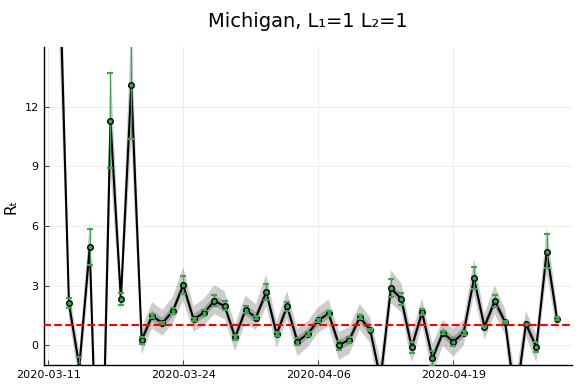
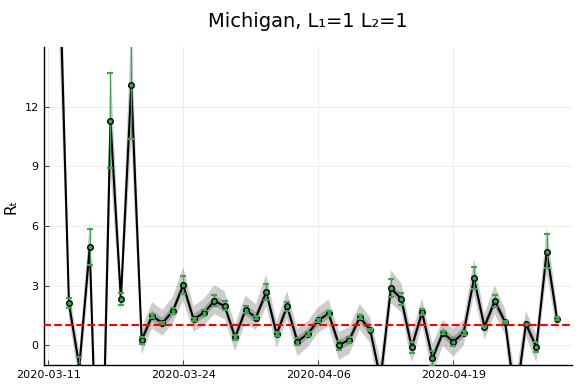 


 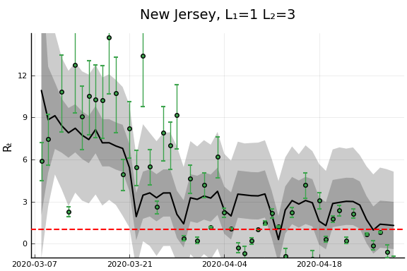
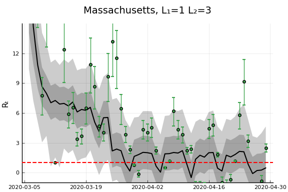
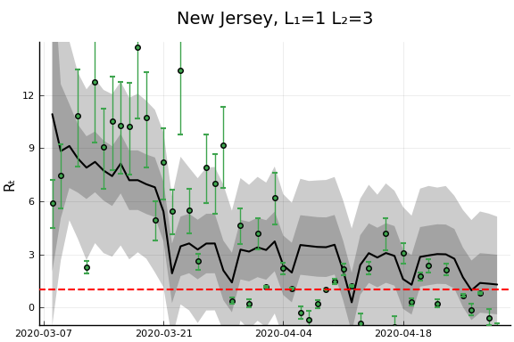
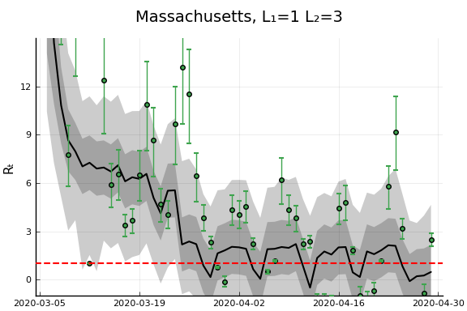


 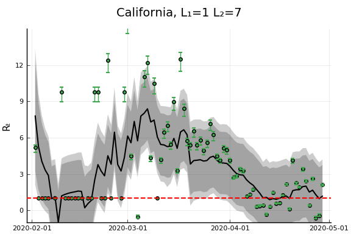
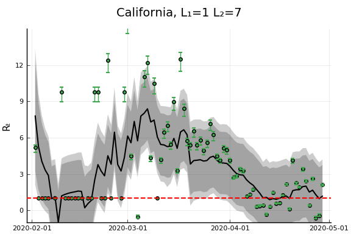


 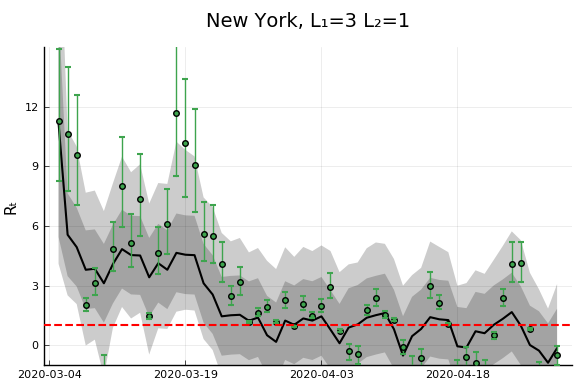
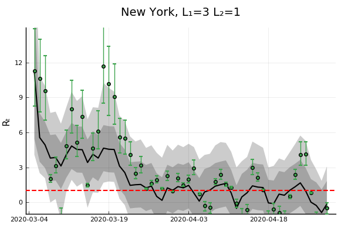  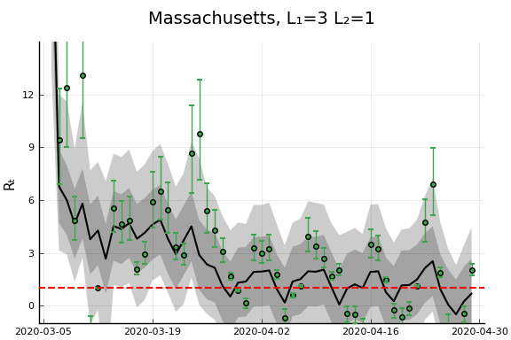
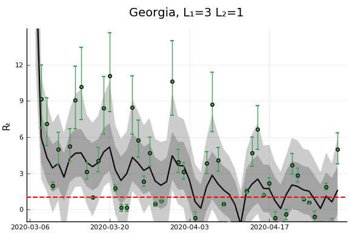
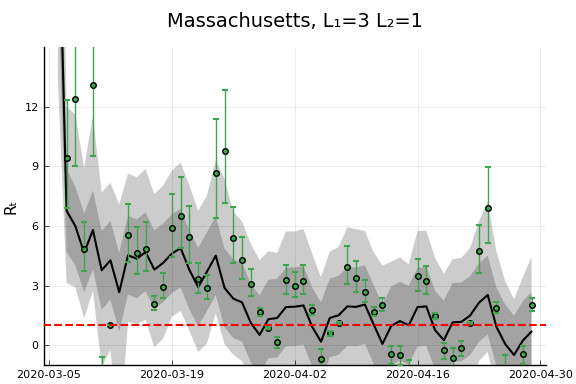
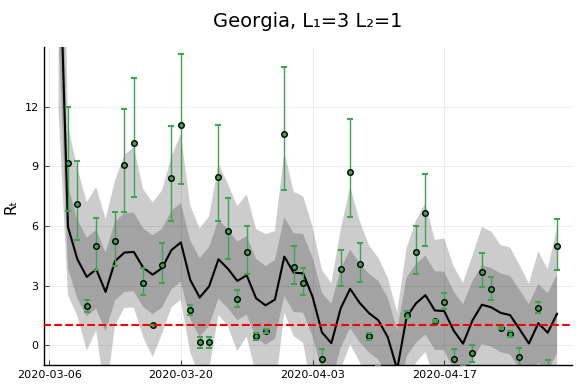 


 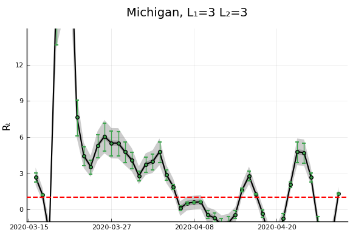
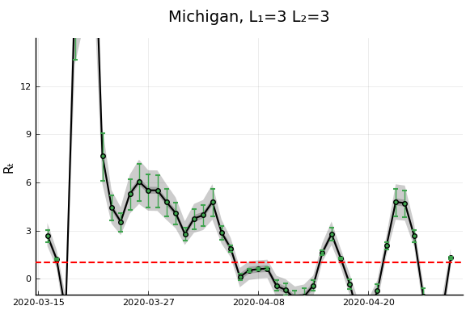 


 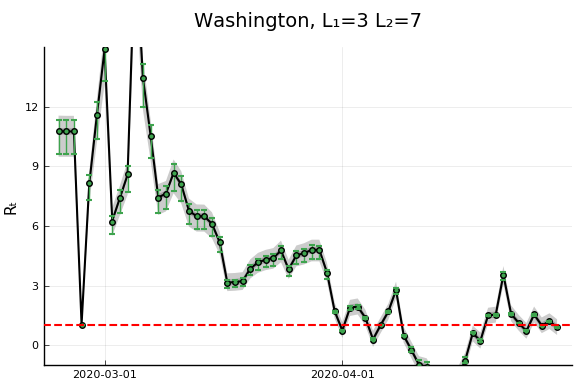
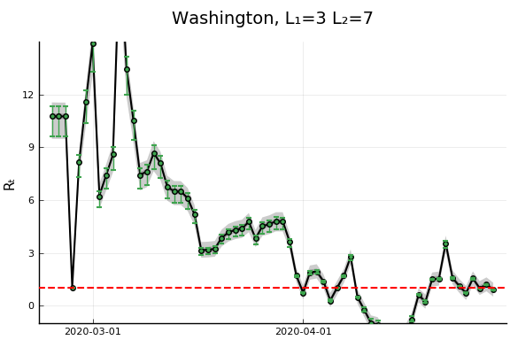

 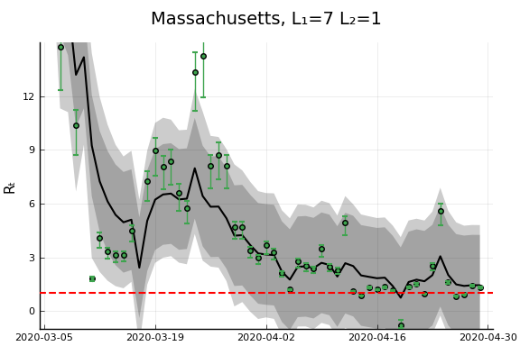 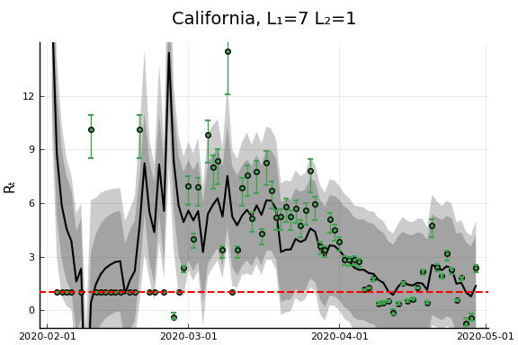
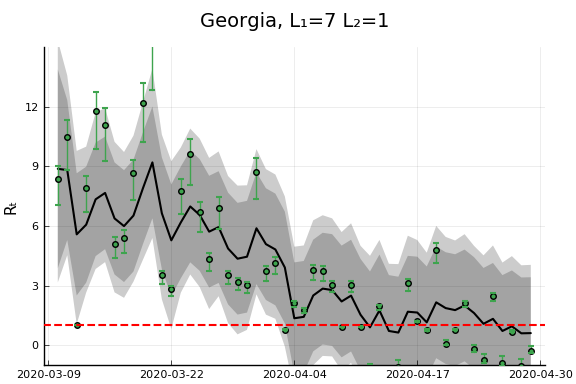
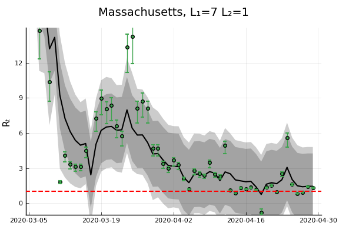 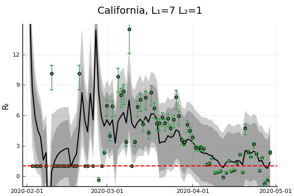
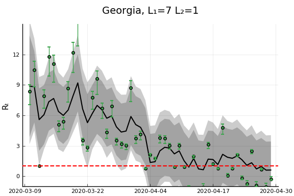 
 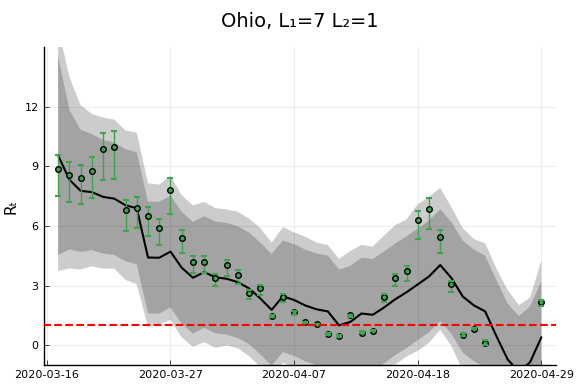
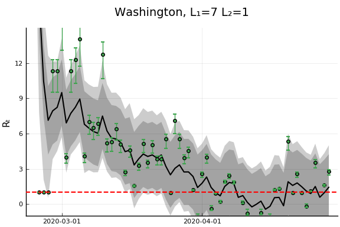
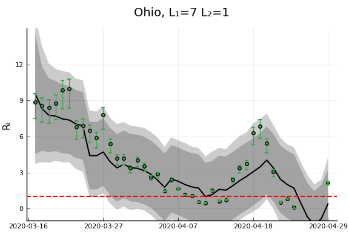
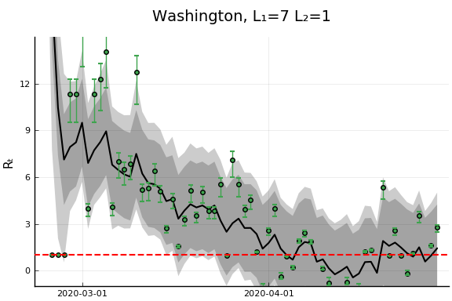


 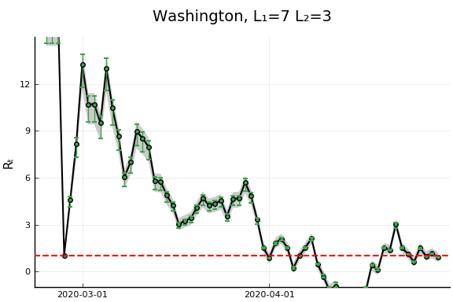
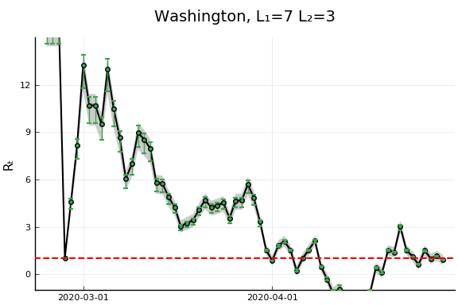


 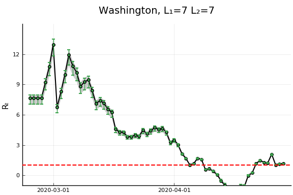
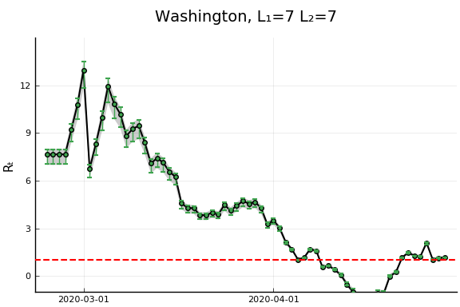